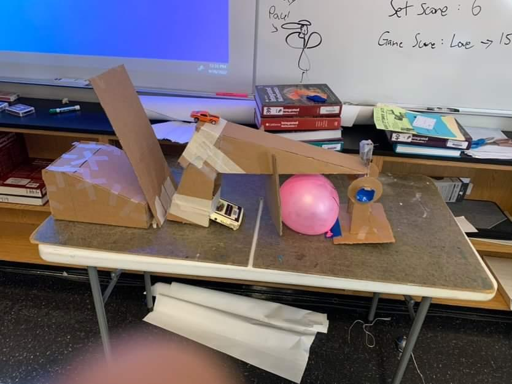
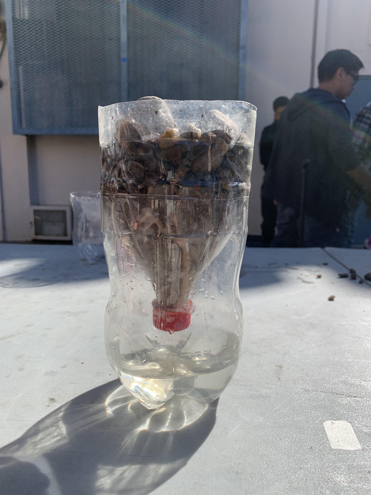
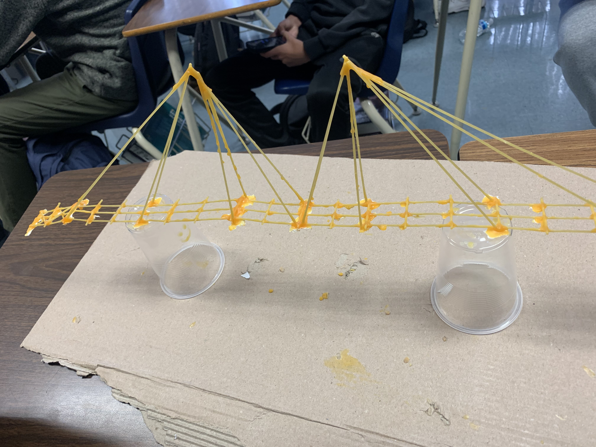

9.2.22 - This week we learned about models and the types of models. These models were used for replicas of certain products. We will be using these models in tinkercad next week where we will attempt to pop a balloon.
Journal week 2
9.9.22 - This week we learned about tinkercad and the modelelling ascpects and UI needed to become proffesionals, and it's very fun to model. Seeing a model in real life and recreating our tinkercad is even cooler though because you make something not real into something you can touch.
Journal week 3
9.16.22 - Today we made boats out of paper and put them in water while adding weights. Out of Andy, Noah, absent Alex, and I, Noah was the boat we used. It floated boyant for 5 minutes while staying in a corner for the majority of the time. Construction of our balloon popping models has also started.
Journal week 4
9.23.22 - This week we started testing out our projects and seeing if all the components work when put together. After trial and error we got it to work once in a test run, however when we recorded it, it didn't work due to the car breaking.

Journal week 5
9.30.22 - we've recorded the goldberg projects and have started our dive into computer engineering, today we dissected old chromebooks and its interesting to see all the parts layed out, it shows you a perspective on how advanced computers and their components are. It's also interesting to see how everything plays a part.
Journal week 6
10.7.22 - Today we saw how important the specifics of steps in a procedure by making pb and j sandwiches with vague details. This shows an example of how precise you need to be with your code while sending an input to a computer.
Journal week 7
10.14.22 - This week we had a speaker talk to us about rockets and airspace engineering. It was fascinating to understand how many procedures they must take to make everything perfect. It was also interesting to learn about the parts of a rocket and what every component contibutes.
Journal week 8
10.21.22 - This week we constructed and launced a water pressure rocket, sadly, none of them worked. The problem was the angle it was getting launced off of. Sincee it was 45 degrees, all the rockets would just spin out of control. Mr. Kim got hit a lot by the rockets, and it was funny.
Journal week 9
10.28.22 - This week we learned about bio-engineering. It's sad to know we have to face problems of climate change and deforestation, however knowing that engineering can help the world is empowering. Yesterday we made water filters out of rocks, sand, and cotton. We had one of the cleanest filters because of how much cutton we used.

Journal week 10
11.4.22 - This week we started learning about circuits and how electricity needs to meet certain requirements to flow through a body.
Journal week 11
11.11.22 - This week we started using breadboards to make simple circuits. The one me and Andy made was a led system with a resistor. After documenting the resistance, we played around with buttons and it was interesting to learn how precise certain things need to be.
Journal week 12
12.1.22 - This week we started our industrial engineering course where we learn about architecture and what factors make up certain buildings.
Journal week 13
12.8.22 - Today we started the construction of a bridge entirely made up of spaghetti and glue. Our design is a bunch of pasta alternating in a line. This will be our first iteration of the design.

Journal week 14
12.15.22 - Our first design broke almost instantly and could barely hold up the cup of water. We will start contruction of a new bridge that also looks better than just a stick.
Journal week 15
1.13.23 - First week of the new year and we are starting to learn about new ways of engineering. We learned about hypertrains and different big projects that are either developed or in development.
Journal week 16
1.20.23 - Second week of the new year and we just learned about chemical engineering and how quantity changes certain chemical reactions, and how everything needs to be proportioned in order to mass produce chemicals.
Journal week 17-22
3.3.23 - The past 6 weeks, we made a cage for a water balloon on a stick that had suspension, and we have worked on an arduino-controlled car. In the first week, we designed the model in tinkercad, and although we used the design at first, we changed to a bigger and more stable body in the end. In the second week, we got the components and started contruction of the model. In the third week, we started coding and testing functionality of the model. In the fourth week, we started testing by powering the car with a chromebook. For the most part it worked, however in the fifth week, we ran into a coding error where the wheels were spinning different ways, and we quickly fixed that. We also ran into problems of the motors being both right wheels, however this was also an easy fix. In the sixth week, we finally had a functioning baterry-powered, arduino-controlled car that could drive in a straight line. This project was very fun and helped me understand how time is such an important factor to the construction of a project.


![]()